Enfermeira em formação pela UPE · Criadora do @Enf.focus_
Um diário de bordo acadêmico que une conteúdo técnico de qualidade, organização e humanização — mostrando que estudar com excelência caminha lado a lado com o autocuidado.
Mais do que estudos, mostro a caminhada do autocuidado que precisa estar alinhado a ela. com essência, sem deixar de ser diva ♡
Prazer, sou a Sthefany Mariano! Cristã, irmã mais velha e apaixonada por crianças e pela área da saúde. Criei o @Enf.focus_ para transformar a minha rotina na graduação em algo que também ajuda outras pessoas.
Aqui eu compartilho dicas práticas de estudo, resumos organizados, reflexões sobre os desafios da formação e também beleza e cuidados — porque uma futura profissional da saúde cuida do próximo sem esquecer de cuidar de si.
Uno humanização, organização e conteúdo técnico de qualidade para construir uma comunidade engajada, motivada pelo aprendizado contínuo e pela busca da excelência.
Um espaço digital dedicado à valorização, capacitação e conexão de estudantes, profissionais da saúde e de todos que se interessam por conhecimento e desenvolvimento pessoal. Um verdadeiro diário de bordo que aproxima a teoria da realidade vivida na graduação.
Os bastidores reais da formação em Enfermagem, do jeito que é.
Métodos práticos e resumos organizados para render mais.
Cuidar de si faz parte de cuidar do outro com excelência.
Sobre desafios, aprendizados e a busca pela excelência profissional.
Formação contínua e cursos que fortalecem minha caminhada rumo à especialização. Cada certificado é um passo dado com dedicação.
Abrir PDF →
Abrir PDF →
Abrir PDF →
Abrir PDF →
Abrir PDF →
Abrir PDF →
Abrir PDF →
Momentos de partilha de conhecimento — em sala, em eventos e junto à comunidade, onde a teoria encontra o cuidado com as pessoas.
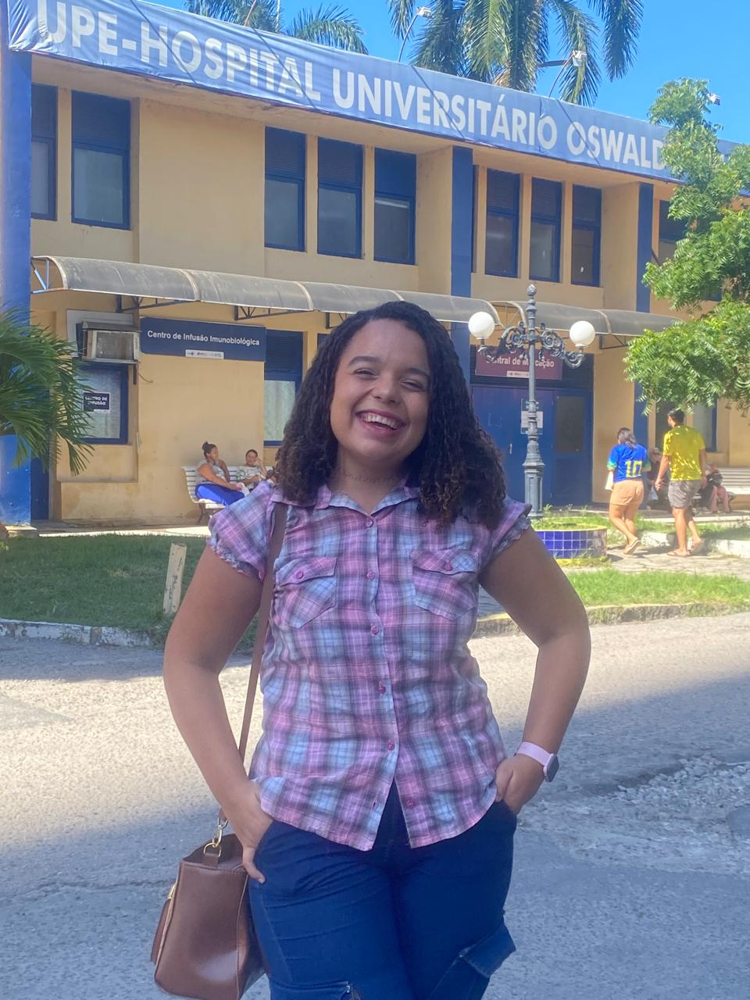
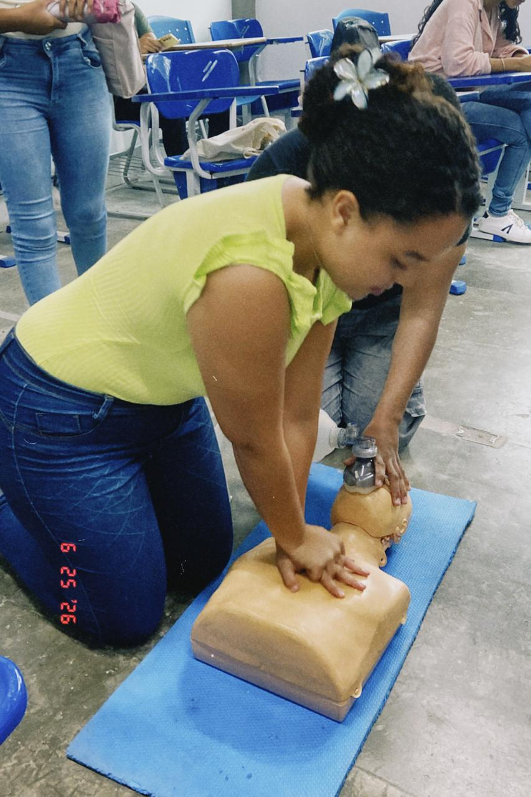
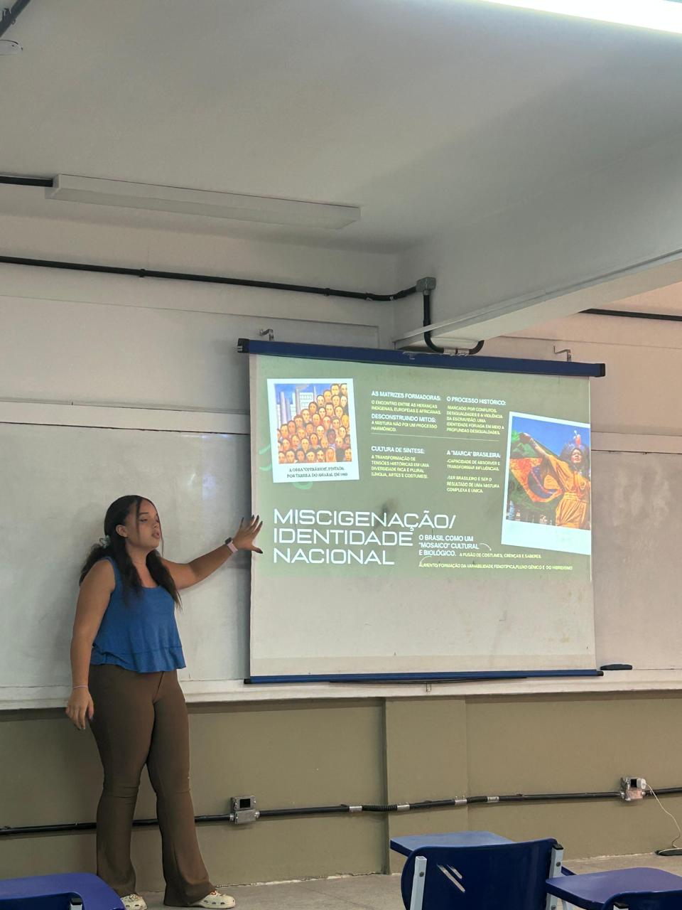
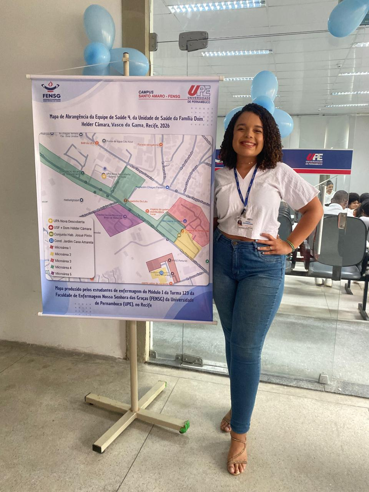
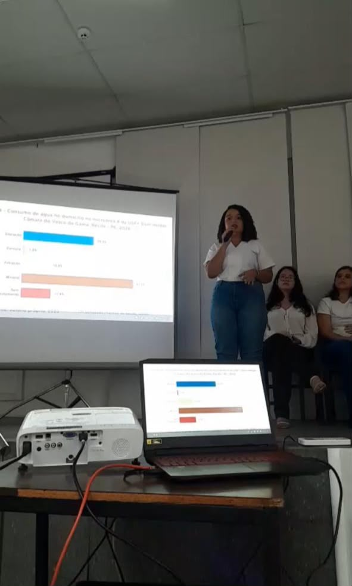
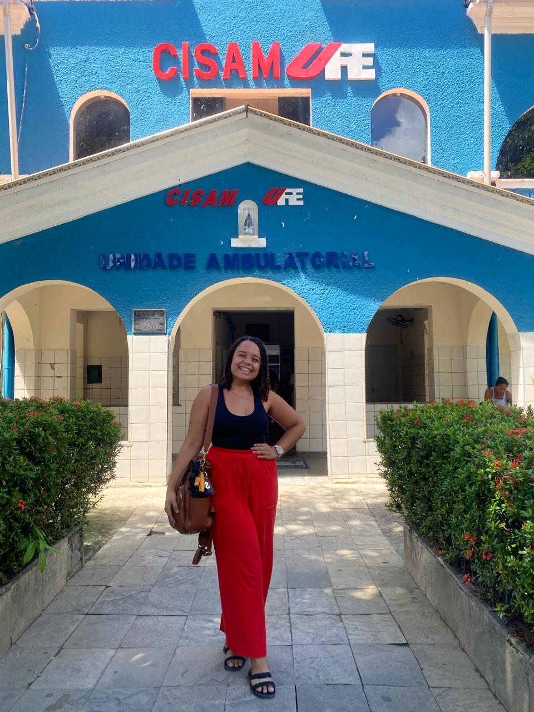
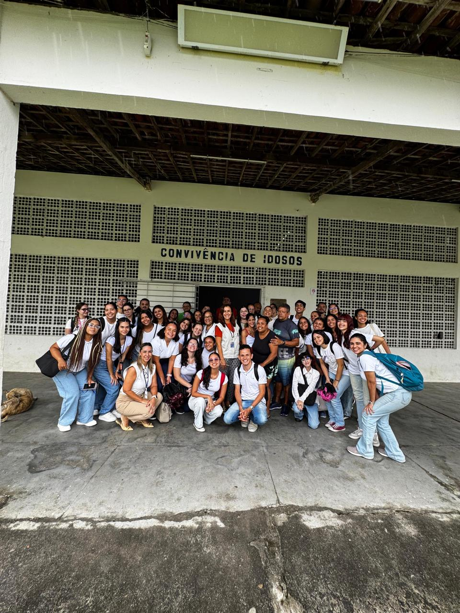
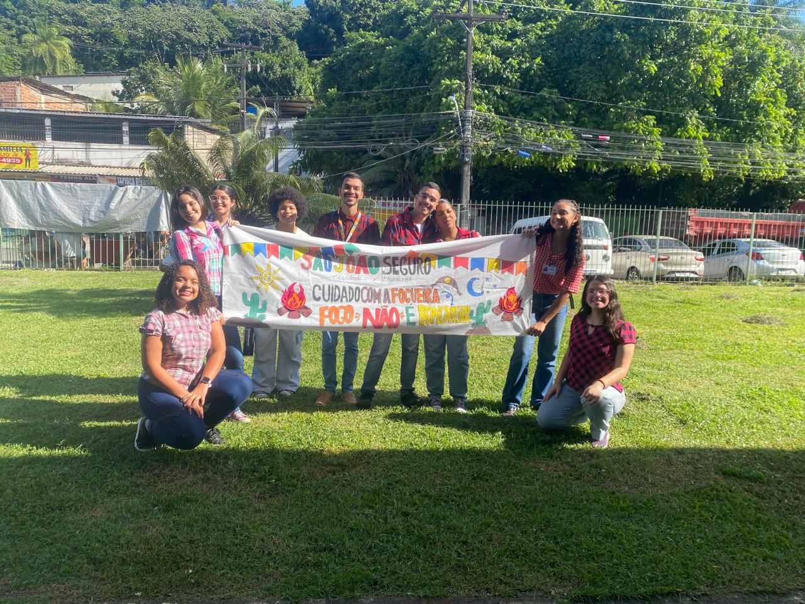
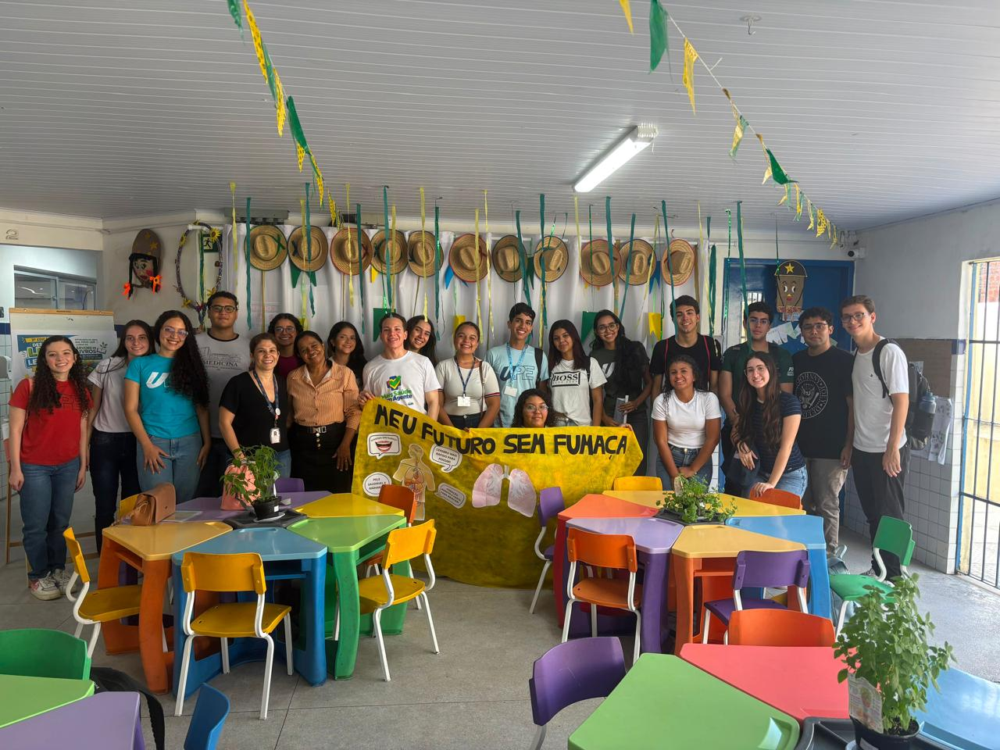
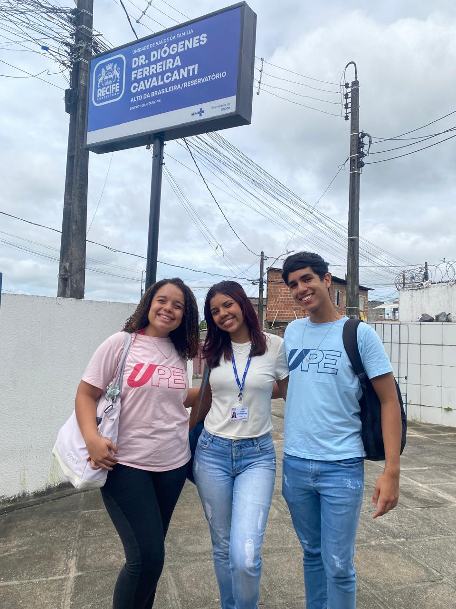
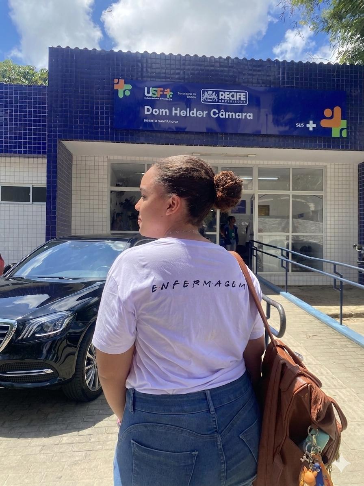
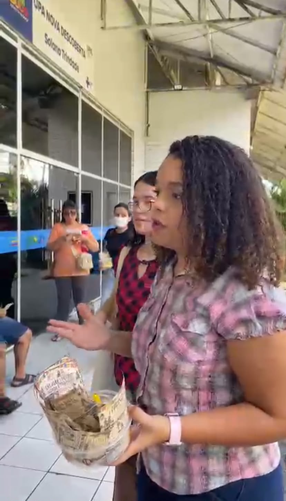
Para parcerias, dúvidas ou apenas trocar sobre a caminhada na saúde — estou por aqui. Será um prazer te responder ♡